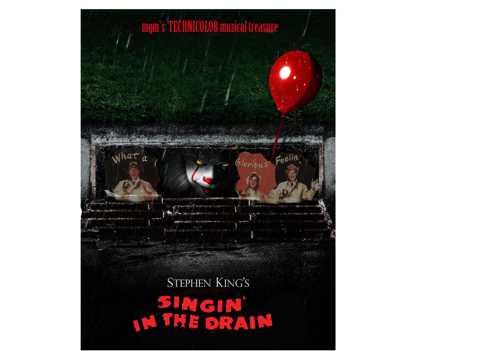

Movie Poster

For this group project I came up with the play on words "singing in the drain," a take on Singing in the Rain, and the drain from It. I would have worked more on shadows and cleaning up the text. Overall, I like the mix of horror and a musical. It creates an interesting juxtaposition between the genres.